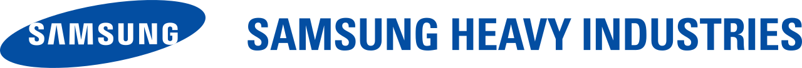

홈 > 브랜드 매거진 > HD현대중공업
HD현대중공업
HD현대중공업(HD Hyundai Heavy Industries)은 세계 최대 규모의 조선 기업으로, 1972년 현대조선중공업으로 설립됐다.
산업 분야 브랜드·비즈니스 · 공개 등급 자료 기반 · 브랜드 평가 4.4 ★
한눈에 보는 브랜드
HD현대중공업(HD Hyundai Heavy Industries)은 HD현대 그룹 산하의 조선·중공업 기업이다. 1972년 정주영이 현대조선중공업으로 설립했고, 2022년 그룹이 'HD현대'로 리브랜딩됐다.
브랜드 관점
정주영이 세운 울산 조선소에 뿌리를 둔 세계적 조선사로, 상선부터 함정·잠수함까지 짓는다.
시작과 성장
1972년 현대그룹 창업주 정주영이 울산에 조선소를 세우며 출발했다. 2019년 물적분할로 중간지주 한국조선해양(현 HD한국조선해양)을 신설하고 사업회사 HD현대중공업으로 재편됐다.
브랜드 아이덴티티
1983년 세계 1위에 오른 세계 최대 규모의 조선사로, 원유운반선·LNG선·컨테이너선과 해양설비·함정 등을 건조하는 한국 중공업의 상징이다.
제품과 서비스
컨테이너선·LNG선·탱커 등 상선, 해양플랜트, 함정·잠수함 등 특수선, 엔진기계, 전력기기를 만든다.
사람들
현재 상태
2024년 별도 매출 약 14조5,000억 원, 영업이익 약 7,052억 원으로 조선·전력기기 부문 호조를 보였다.
타임라인
정리된 연도형 이벤트가 없습니다.
BI/CI 변천사
함께 읽을 브랜드

브랜드·비즈니스 · 자료 기반삼성중공업삼성중공업(Samsung Heavy Industries)은 삼성그룹 계열의 조선 기업으로, 1974년 설립된 한국 조선 빅3 중 하나다.
 브랜드·비즈니스 · 자료 기반효성
브랜드·비즈니스 · 자료 기반효성효성(Hyosung)은 섬유·중공업·화학을 아우르는 한국의 복합 기업집단으로, 1966년 동양나일론에 뿌리를 둔다.
 브랜드·비즈니스 · 편집 검수Cosmo Oil
브랜드·비즈니스 · 편집 검수Cosmo Oil코스모석유는 일본의 정유·석유 정제 및 주유소 운영 기업으로, 현재 지주회사 코스모에너지홀딩스 산하의 핵심 사업회사다. 가솔린, 경유, 윤활유 등 석유제품의 정제와...
Ka
Kawasaki Shinkin Bank
브랜드·비즈니스 · 편집 검수Kawasaki Shinkin BankKawasaki Shinkin Bank는 1972년에 기록된 From Japan 계열의 브랜드 아이덴티티 사례입니다. Mitsuo Katsui가 아이덴티티 작업의 디...
 브랜드·비즈니스 · 편집 검수Toyota
브랜드·비즈니스 · 편집 검수Toyota도요타는 1937년 일본에서 설립된 자동차 제조사로, 코롤라·캠리·프리우스를 비롯한 광범위한 차종과 렉서스 럭셔리 브랜드를 운영하며 연간 1천만 대 이상을 판매하는...
 브랜드·비즈니스 · 편집 검수Tripadvisor
브랜드·비즈니스 · 편집 검수Tripadvisor트립어드바이저(Tripadvisor)는 전 세계 여행자가 직접 남긴 후기를 모아 숙소·음식점·관광지·체험을 비교하고 예약하도록 돕는 미국의 여행 플랫폼이다. 2000...
 브랜드·비즈니스 · 편집 검수Twitch
브랜드·비즈니스 · 편집 검수Twitch트위치(Twitch)는 아마존 산하의 실시간 게임 스트리밍 플랫폼으로, 게이머가 자신의 플레이를 생중계하고 시청자가 채팅으로 실시간 반응하는 양방향 라이브 방송을 핵...
 브랜드·비즈니스 · 편집 검수Walmart
브랜드·비즈니스 · 편집 검수Walmart월마트는 1962년 샘 월튼이 미국 아칸소에서 시작한 세계 최대 규모의 소매 기업이다. 상시저가(EDLP) 전략과 대형 할인점 모델로 성장해 수십 년간 매출 기준 세...